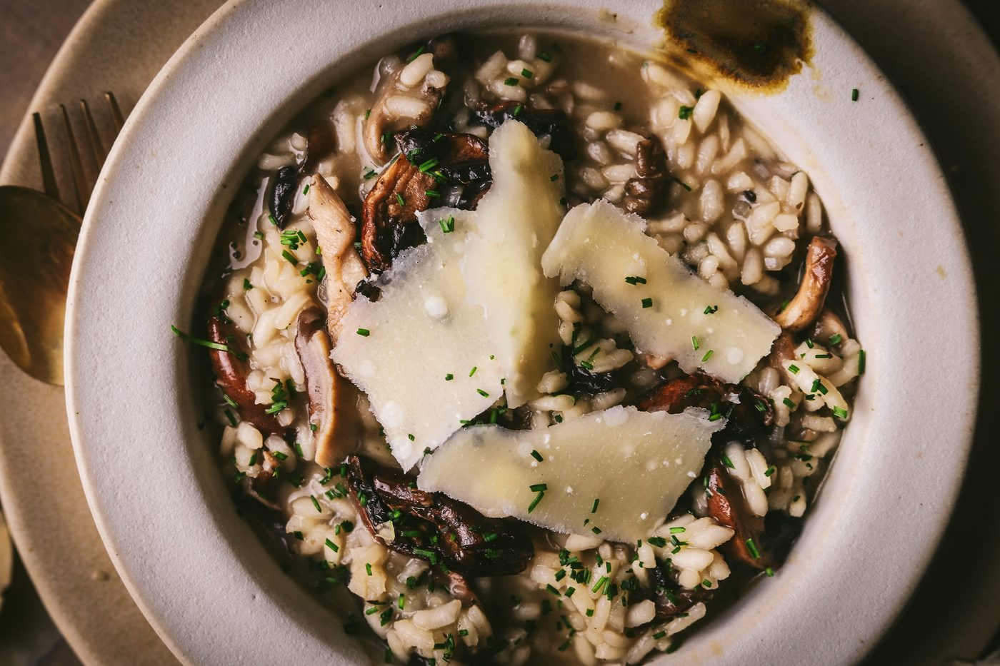
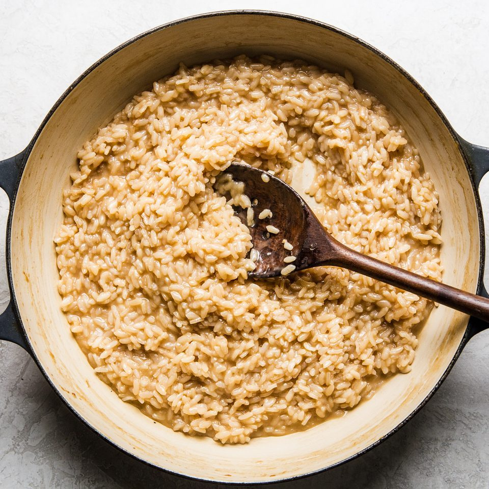
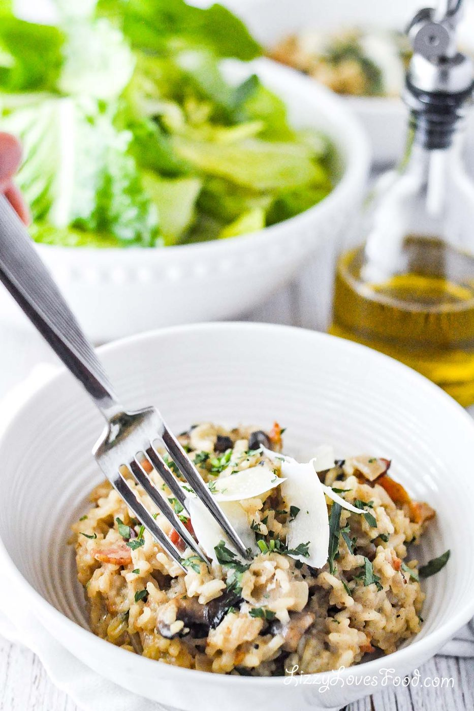
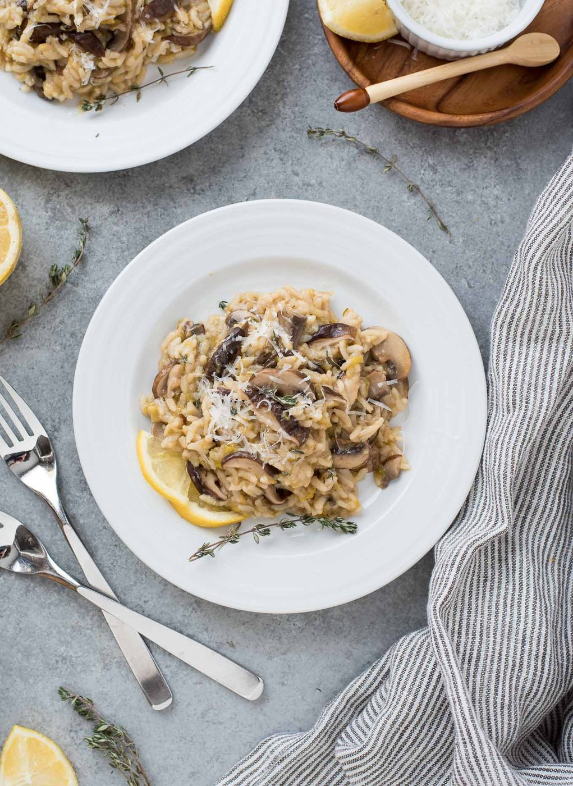
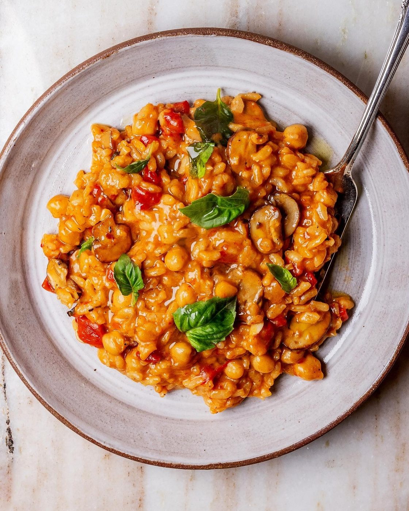
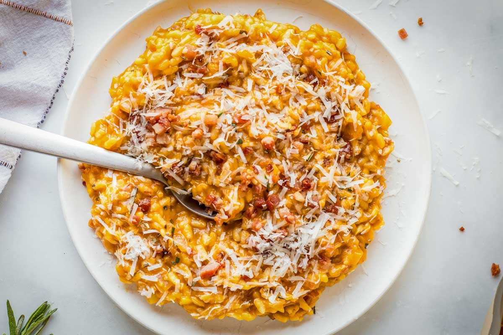
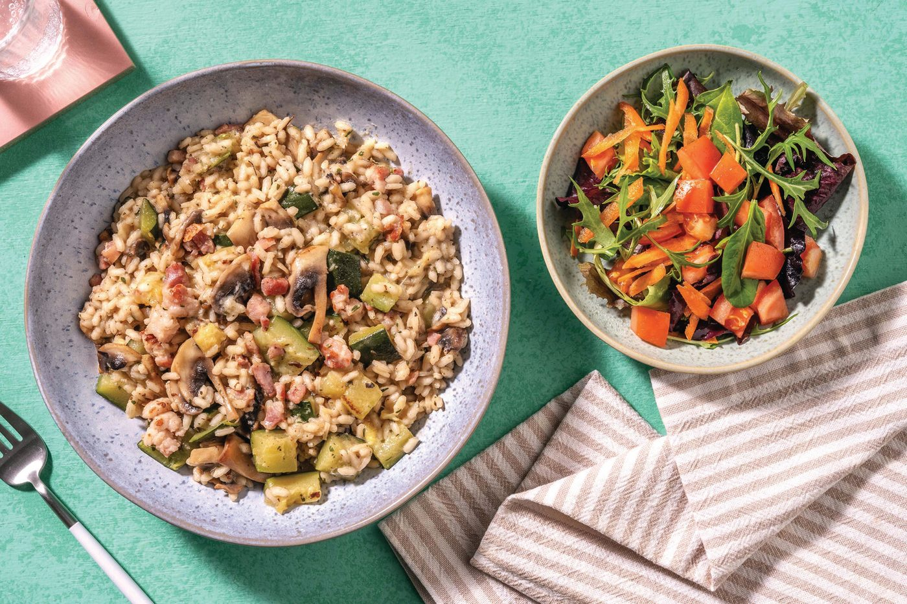
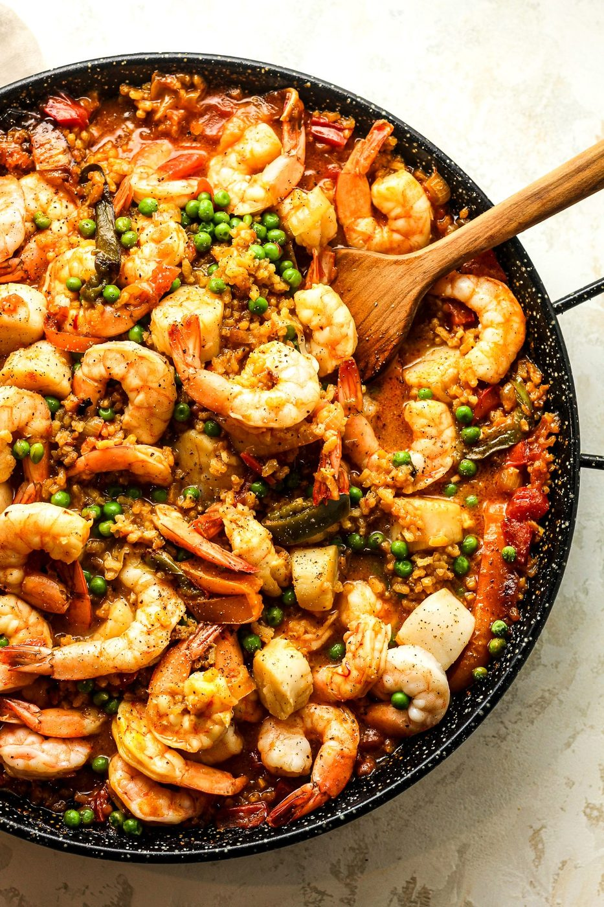

← Italian Classics
Mushroom Risotto
Twenty minutes of stirring buys you the creamiest rice in the Western canon.
Twenty minutes of stirring buys you the creamiest rice in the Western canon.
Risotto is northern Italy's answer to the question 'what if comfort food were a technique?' Starch-rich short-grain rice — arborio, carnaroli — toasted, then drowned repeatedly in hot stock while you stir. The motion isn't mystical; it just knocks the starch granules loose so they thicken the cooking liquid into a sauce around each grain, which stays pointedly al dente at the center.
With mushrooms, the dish becomes earthy and deep: brown the mushrooms hard and separately so they develop real color, then fold them through at the end. The finishing move is mantecatura — beating cold butter and parmesan into the pan off the heat until the whole thing turns glossy and waves lazily when you shake it. Italians call that wave all'onda. It is the single most satisfying texture in the recipe.
serves 4 — tick items off as you shop; it saves as you go
Every tool this recipe leans on — click any tool for its full story. The whole catalog lives on the Tool Wall.
wide and heavy - the rice wants a shallow lake
the stock stays steaming on the next burner
one circle of stock at a time
the official tool of risotto
parmesan snow, grated at the last second
Hot pan, oil, mushrooms in a single layer, and then the hard part: leave them alone. Two to three minutes per side for real caramelization. Season at the end, set aside.
In a wide pan, sweat the shallot in a knob of butter until translucent. Add the rice and toast two minutes until the edges turn glassy and the centers stay chalk-white.
Pour in the wine; let it evaporate completely. Then add hot stock a ladle at a time, stirring with a relaxed, constant rhythm. Each addition should just cover the rice. Sixteen to eighteen minutes total.
Taste at fourteen minutes. You want the grain tender outside, with a defiant little center. Undercooked is chalk; overcooked is baby food. Aim between.
Kill the heat. Beat in the cold butter and parmesan vigorously — this is what makes it creamy, not the stirring. Fold in the mushrooms. Shake the pan; the risotto should ripple like the sea. Serve on flat plates, immediately.







Images are web-sourced via image search and self-hosted. Original sources:
https://z-cdn.chatglm.cn/image-search-mcp/images-ppt/1d1c5107c910.jpghttps://z-cdn.chatglm.cn/image-search-mcp/images-ppt/282ab52bdc94.jpghttps://z-cdn.chatglm.cn/image-search-mcp/images-ppt/6137004d4d6b.jpghttps://z-cdn.chatglm.cn/image-search-mcp/images-ppt/61d277b4674f.jpeghttps://z-cdn.chatglm.cn/image-search-mcp/images-ppt/7200bc6bd91d.jpghttps://z-cdn.chatglm.cn/image-search-mcp/images-ppt/889a44022fc0.jpghttps://z-cdn.chatglm.cn/image-search-mcp/images-ppt/ec1036421852.jpgVerified working videos — click a card to load the embed.


The dish at a glance — twelve field notes for the collectors.
Powered by GitHub Issues — the backup kitchen. One issue per recipe; your comment lands in the repo.
Two rice schools that share a border: the north stirs starch in; Valencia leaves it alone until it crackles.

If this one works for you, the neighbors probably will too.
the stirring school: meditation with a spoon